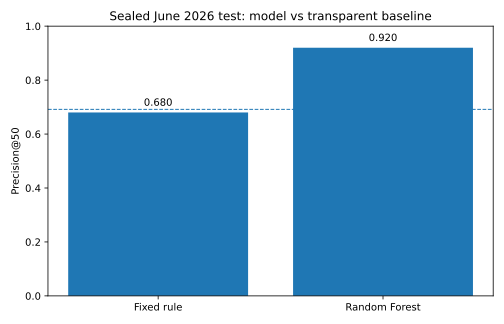

Predicting Next-Month Search Decline for Content Review Prioritization
Abdullah Ragab · Refresh / Content Opportunity Scoring · public-safe decision-support research
Abstract
Which content pages should a constrained SEO/content team review first before search visibility declines? I built monthly decision snapshots from the gated FlyRank warehouse and used only historical Google Search Console signals to predict whether next-month impressions would fall by more than 20%. Models were selected on May 2026 after training on March–April snapshots, then evaluated once on a sealed June 2026 test month against the same transparent baseline and Precision@50 metric. On the sealed test, the selected random forest achieved Precision@50 = 0.920 versus 0.680 for the fixed rule, with a test base rate of 0.692. The result supports a ranked human-review queue with reason codes; it does not establish that refreshing a page causes recovery.
1. Introduction / Problem Statement
Large content portfolios create a prioritization problem: review capacity is limited, while search performance changes continuously. The decision supported here is which already-visible pages should be reviewed first at the end of a month because their next-month search impressions appear at elevated decline risk. The output is a review order, not an automatic rewrite, deletion, redirect, or publishing instruction.
2. Data
Source: FlyRank/internship-warehouse, build flyrank_pseudonymized_warehouse_release_v20260703. The study uses dim_clients and fact_content_daily_performance. The full release spans 2025-01-27 through 2026-06-30; this capstone deliberately queries January–June 2026 because those months are sufficient to build non-overlapping feature and target windows while keeping June sealed for final evaluation.
One row in the modeling table is one pseudonymized content item at one monthly decision point. Eligibility requires at least 100 impressions in the immediately preceding month, at least 50 impressions in the month before that, at least seven active search days in the recent month, and client history beginning before the feature window. I excluded GA4 and the fixed 90-day query table from the final model to keep the target boundary simple and avoid tracking-availability and overlapping-window leakage.
3. Methodology
- Target: next-calendar-month impressions < 80% of immediately preceding-month impressions.
- Features: recent impressions/clicks, CTR, average position, position change, impression momentum, and active search days — all measured before the target month.
- Baseline: transparent weighted score emphasizing recent negative momentum, worsening position, and review value from visibility.
- Models: Logistic Regression and Random Forest.
- Time-aware validation: March–April snapshots train the models; May selects the method; June is held sealed until final evaluation.
- Primary metric: Precision@50, because the operational constraint is a limited review queue.
- Leakage checks: no target-month features, no hash IDs as features, no product decision flags, no query-window overlap, no automatic actions.
4. Results
| Method | June base rate | P@20 | P@50 | P@100 | Average precision | ROC AUC |
|---|---|---|---|---|---|---|
| Transparent fixed rule | 0.692 | 0.600 | 0.680 | 0.650 | 0.687 | 0.508 |
| Random Forest | 0.692 | 0.950 | 0.920 | 0.910 | 0.752 | 0.588 |

The headline number is the sealed June Precision@50. May was used for method selection; June was not used to choose the winning model. The comparison therefore measures next-month ranking performance under a true past→future boundary, not a same-window proxy.
5. Limitations & Honest Framing
- This is predictive ranking, not a causal refresh experiment.
- The label defines decline as a >20% month-over-month impression drop; alternative thresholds may change the queue.
- Seasonality, SERP changes, content consolidation, campaigns, indexing events, and measurement noise can create false positives.
- The panel is unbalanced. History eligibility reduces, but does not eliminate, cross-client differences.
- The model uses GSC-only features. That improves availability consistency but excludes potentially useful engagement context.
6. Ranked Recommendations
The table below is the top of the decision-time review queue. IDs are pseudonymized; reason codes use only information available before the target month.
| Rank | Content ID | Score | Recommended review | Reason codes |
|---|---|---|---|---|
| 1 | content_8a83bb6d5c41806f | 0.9022 | review_for_refresh_or_competition_change | recent_impression_decline, position_worsening |
| 2 | content_5e97c23ac01739b5 | 0.8941 | review_for_refresh_or_competition_change | recent_impression_decline, position_worsening |
| 3 | content_3f5c08aeceef353c | 0.8888 | review_for_refresh_or_competition_change | recent_impression_decline, position_worsening |
| 4 | content_4f9b771c5b76a0d6 | 0.8834 | review_for_refresh_or_competition_change | recent_impression_decline, position_worsening |
| 5 | content_7ef32fcd87bbde5c | 0.8810 | review_for_refresh_or_competition_change | recent_impression_decline, position_worsening, reduced_active_days |
| 6 | content_22c2d127934e10ed | 0.8749 | review_for_refresh_or_competition_change | recent_impression_decline, position_worsening |
| 7 | content_33455185fea053a7 | 0.8748 | review_for_refresh_or_competition_change | recent_impression_decline, position_worsening, reduced_active_days |
| 8 | content_31d15c9c64491642 | 0.8744 | review_for_refresh_or_competition_change | recent_impression_decline, position_worsening |
| 9 | content_63f2ce52dc78cae2 | 0.8703 | review_for_refresh_or_competition_change | recent_impression_decline, position_worsening |
| 10 | content_f0a2e715851a8c84 | 0.8703 | review_for_refresh_or_competition_change | recent_impression_decline, position_worsening |
Action policy: model = ordering, reason codes = explanation, human = decision. No automatic edit, rewrite, merge, deletion, redirect, or publication is authorized by the score.
7. Reproducibility
The complete implementation and executed evidence live in the public repository. The final run records snapshot row counts, model-selection metrics, sealed-test metrics, target definition, leakage checks, and the top recommendation receipt as small committed JSON artifacts. The bulk ranked queue stays out of git by design.
8. Acknowledgments & Data Credit
Built on the FlyRank ML Internship dataset — FlyRank AI. The data release is pseudonymized; no client names, domains, raw URLs, private queries, credentials, or raw identifying exports are published here.